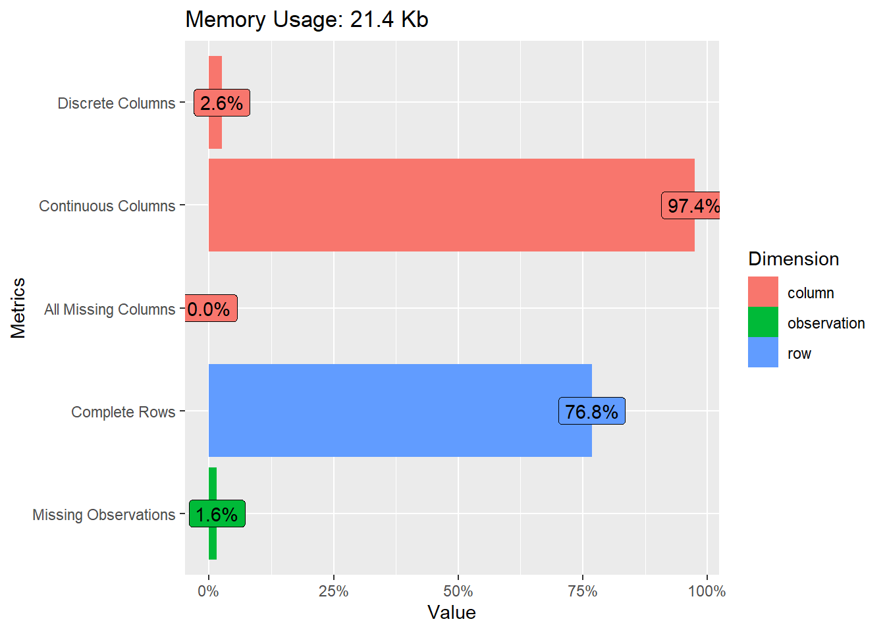
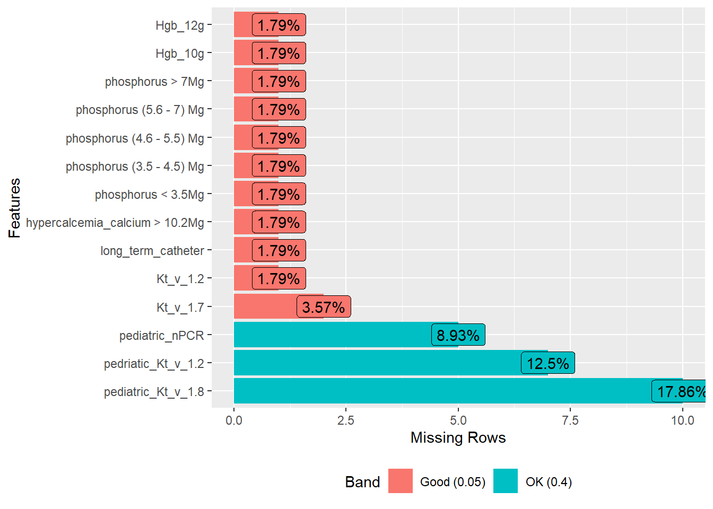
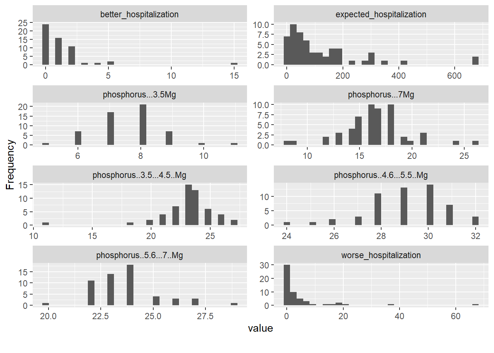
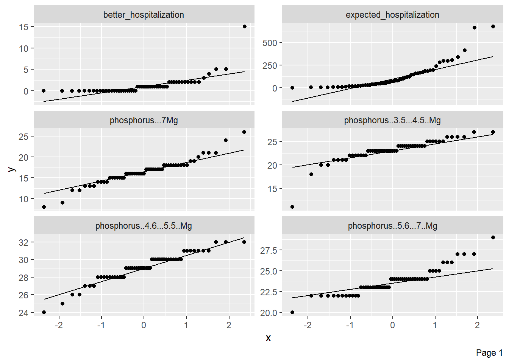
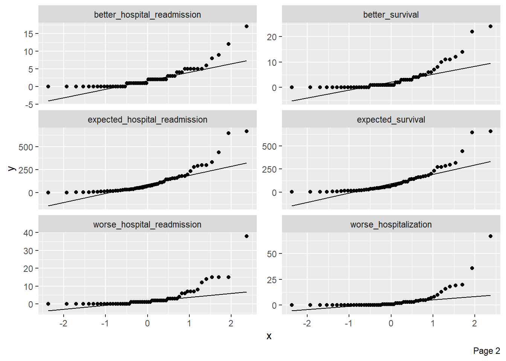

| better_fistula | better_hospital_readmission | better_hospitalization | better_infection | better_survival | better_transfusion | expected_fistula | expected_hospital_readmission | expected_hospitalization | expected_infection | expected_survival | expected_transfusion | Hgb_10g | Hgb_12g | hypercalcemia_calcium > 10.2Mg | incident_transplant_waitlist_better | incident_transplant_waitlist_expected | incident_transplant_waitlist_worse | Kt_v_1.2 | Kt_v_1.7 | long_term_catheter | pediatric_Kt_v_1.8 | pediatric_nPCR | pedriatic_Kt_v_1.2 | phosphorus (3.5 - 4.5) Mg | phosphorus (4.6 - 5.5) Mg | phosphorus (5.6 - 7) Mg | phosphorus < 3.5Mg | phosphorus > 7Mg | prevalent_transplant_waitlist_better | prevalent_transplant_waitlist_expected | prevalent_transplant_waitlist_worse | worse_fistula | worse_hospital_readmission | worse_hospitalization | worse_infection | worse_survival | worse_transfusion | |
|---|---|---|---|---|---|---|---|---|---|---|---|---|---|---|---|---|---|---|---|---|---|---|---|---|---|---|---|---|---|---|---|---|---|---|---|---|---|---|
| Mean | 4.928571 | 2.446429 | 1.250000 | 40.000000 | 3.482143 | 0.1785714 | 116.571429 | 119.589286 | 122.964286 | 74.000000 | 118.928571 | 99.232143 | 21.4727273 | 0.2363636 | 2.4000000 | 4.714286 | 61.017857 | 2.857143 | 96.4000000 | 91.7222222 | 17.0181818 | 74.5434783 | 91.0196078 | 91.2040816 | 23.1272727 | 29.0909091 | 23.7090909 | 7.6000000 | 16.4545455 | 7.839286 | 120.910714 | 2.892857 | 5.250000 | 3.500000 | 4.928571 | 1.142857 | 4.125000 | 7.285714 |
| Std.Dev | 9.444300 | 3.201816 | 2.225881 | 54.678232 | 5.134522 | 0.4712514 | 137.766714 | 143.414945 | 144.863442 | 80.787038 | 141.581824 | 120.253367 | 7.8689605 | 0.4287638 | 4.3316236 | 9.692948 | 84.743354 | 5.528204 | 1.8718183 | 4.3628650 | 3.9181010 | 23.3063716 | 14.8478823 | 10.3822356 | 2.4118116 | 1.6696942 | 1.5948148 | 1.0988209 | 3.0600059 | 24.430069 | 144.045735 | 3.530020 | 8.237939 | 6.266796 | 10.759955 | 1.710168 | 6.084444 | 9.415102 |
| Min | 0.000000 | 0.000000 | 0.000000 | 0.000000 | 0.000000 | 0.0000000 | 0.000000 | 2.000000 | 1.000000 | 0.000000 | 2.000000 | 1.000000 | 9.0000000 | 0.0000000 | 1.0000000 | 0.000000 | 0.000000 | 0.000000 | 87.0000000 | 69.0000000 | 10.0000000 | 0.0000000 | 15.0000000 | 47.0000000 | 11.0000000 | 24.0000000 | 20.0000000 | 5.0000000 | 8.0000000 | 0.000000 | 0.000000 | 0.000000 | 0.000000 | 0.000000 | 0.000000 | 0.000000 | 0.000000 | 0.000000 |
| Q1 | 0.000000 | 0.000000 | 0.000000 | 5.500000 | 0.000000 | 0.0000000 | 24.500000 | 22.500000 | 26.000000 | 13.000000 | 23.000000 | 21.500000 | 18.0000000 | 0.0000000 | 1.0000000 | 0.000000 | 8.500000 | 0.000000 | 96.0000000 | 90.0000000 | 15.0000000 | 64.0000000 | 89.0000000 | 86.0000000 | 22.0000000 | 28.0000000 | 23.0000000 | 7.0000000 | 15.0000000 | 0.000000 | 26.000000 | 0.000000 | 0.000000 | 0.000000 | 0.000000 | 0.000000 | 0.000000 | 1.000000 |
| Median | 2.000000 | 1.500000 | 1.000000 | 22.000000 | 1.000000 | 0.0000000 | 66.000000 | 68.500000 | 71.500000 | 47.500000 | 67.500000 | 53.000000 | 20.0000000 | 0.0000000 | 2.0000000 | 1.000000 | 32.000000 | 1.000000 | 97.0000000 | 93.0000000 | 17.0000000 | 80.5000000 | 96.0000000 | 93.0000000 | 23.0000000 | 29.0000000 | 24.0000000 | 8.0000000 | 16.0000000 | 1.000000 | 63.000000 | 2.000000 | 1.000000 | 1.000000 | 1.000000 | 0.000000 | 1.000000 | 3.000000 |
| Q3 | 5.500000 | 3.500000 | 2.000000 | 52.000000 | 4.500000 | 0.0000000 | 158.500000 | 157.500000 | 169.500000 | 107.000000 | 161.000000 | 135.500000 | 23.0000000 | 0.0000000 | 2.0000000 | 4.500000 | 80.000000 | 3.000000 | 97.0000000 | 94.0000000 | 18.0000000 | 93.0000000 | 100.0000000 | 100.0000000 | 24.0000000 | 30.0000000 | 24.0000000 | 8.0000000 | 18.0000000 | 4.000000 | 168.000000 | 4.500000 | 7.000000 | 3.000000 | 4.500000 | 2.000000 | 5.000000 | 10.500000 |
| Max | 50.000000 | 17.000000 | 15.000000 | 290.000000 | 24.000000 | 2.0000000 | 659.000000 | 665.000000 | 675.000000 | 397.000000 | 657.000000 | 596.000000 | 60.0000000 | 1.0000000 | 33.0000000 | 52.000000 | 420.000000 | 34.000000 | 99.0000000 | 96.0000000 | 29.0000000 | 100.0000000 | 100.0000000 | 100.0000000 | 27.0000000 | 32.0000000 | 29.0000000 | 11.0000000 | 26.0000000 | 168.000000 | 714.000000 | 18.000000 | 40.000000 | 38.000000 | 67.000000 | 8.000000 | 24.000000 | 47.000000 |
| MAD | 2.965200 | 2.223900 | 1.482600 | 26.686800 | 1.482600 | 0.0000000 | 76.353900 | 80.801700 | 83.025600 | 54.856200 | 77.095200 | 62.269200 | 4.4478000 | 0.0000000 | 1.4826000 | 1.482600 | 42.995400 | 1.482600 | 1.4826000 | 2.9652000 | 2.9652000 | 20.0151000 | 5.9304000 | 10.3782000 | 1.4826000 | 1.4826000 | 1.4826000 | 1.4826000 | 2.9652000 | 1.482600 | 77.836500 | 2.965200 | 1.482600 | 1.482600 | 1.482600 | 0.000000 | 1.482600 | 4.447800 |
| IQR | 5.250000 | 3.250000 | 2.000000 | 45.250000 | 4.250000 | 0.0000000 | 132.500000 | 133.000000 | 142.250000 | 92.500000 | 136.500000 | 111.500000 | 5.0000000 | 0.0000000 | 1.0000000 | 4.250000 | 70.250000 | 3.000000 | 1.0000000 | 4.0000000 | 3.0000000 | 28.5000000 | 10.5000000 | 14.0000000 | 2.0000000 | 2.0000000 | 1.0000000 | 1.0000000 | 3.0000000 | 4.000000 | 139.000000 | 4.250000 | 6.500000 | 3.000000 | 4.250000 | 2.000000 | 5.000000 | 9.250000 |
| CV | 1.916235 | 1.308771 | 1.780705 | 1.366956 | 1.474529 | 2.6390081 | 1.181822 | 1.199229 | 1.178094 | 1.091717 | 1.190478 | 1.211839 | 0.3664630 | 1.8140006 | 1.8048432 | 2.056080 | 1.388829 | 1.934871 | 0.0194172 | 0.0475661 | 0.2302303 | 0.3126547 | 0.1631284 | 0.1138352 | 0.1042843 | 0.0573957 | 0.0672660 | 0.1445817 | 0.1859672 | 3.116364 | 1.191340 | 1.220254 | 1.569131 | 1.790513 | 2.183179 | 1.496397 | 1.475017 | 1.292269 |
| Skewness | 3.363870 | 2.328926 | 4.353682 | 2.635591 | 2.262096 | 2.5829463 | 2.096187 | 2.093319 | 2.107653 | 1.777830 | 2.136469 | 2.309874 | 2.7370740 | 1.2073920 | 6.4192747 | 3.542913 | 2.726188 | 3.655246 | -2.8903292 | -2.8380628 | 1.0385708 | -1.2724094 | -3.1559206 | -1.8528969 | -2.2926951 | -0.6565867 | 0.8481480 | 0.3256139 | 0.1880386 | 5.267453 | 2.055601 | 1.901652 | 2.014739 | 3.383665 | 3.960928 | 1.795458 | 1.956831 | 2.220536 |
| SE.Skewness | 0.319000 | 0.319000 | 0.319000 | 0.319000 | 0.319000 | 0.3190000 | 0.319000 | 0.319000 | 0.319000 | 0.319000 | 0.319000 | 0.319000 | 0.3217421 | 0.3217421 | 0.3217421 | 0.319000 | 0.319000 | 0.319000 | 0.3217421 | 0.3245563 | 0.3217421 | 0.3500963 | 0.3334641 | 0.3398276 | 0.3217421 | 0.3217421 | 0.3217421 | 0.3217421 | 0.3217421 | 0.319000 | 0.319000 | 0.319000 | 0.319000 | 0.319000 | 0.319000 | 0.319000 | 0.319000 | 0.319000 |
| Kurtosis | 11.890419 | 6.698317 | 23.383843 | 7.991801 | 5.329195 | 5.9771465 | 4.759628 | 4.725274 | 4.912233 | 3.576431 | 4.953014 | 6.086035 | 10.0996967 | -0.5512415 | 42.3098624 | 12.933033 | 8.090744 | 16.044548 | 11.3474387 | 11.4686782 | 1.5698513 | 1.4283998 | 11.9801099 | 4.7877933 | 9.5790499 | 0.5666625 | 1.2609791 | 0.5920821 | 1.7100296 | 30.444720 | 4.657044 | 4.550810 | 4.184155 | 14.260341 | 18.224998 | 3.260659 | 3.107099 | 5.961102 |
| N.Valid | 56.000000 | 56.000000 | 56.000000 | 56.000000 | 56.000000 | 56.0000000 | 56.000000 | 56.000000 | 56.000000 | 56.000000 | 56.000000 | 56.000000 | 55.0000000 | 55.0000000 | 55.0000000 | 56.000000 | 56.000000 | 56.000000 | 55.0000000 | 54.0000000 | 55.0000000 | 46.0000000 | 51.0000000 | 49.0000000 | 55.0000000 | 55.0000000 | 55.0000000 | 55.0000000 | 55.0000000 | 56.000000 | 56.000000 | 56.000000 | 56.000000 | 56.000000 | 56.000000 | 56.000000 | 56.000000 | 56.000000 |
| Pct.Valid | 100.000000 | 100.000000 | 100.000000 | 100.000000 | 100.000000 | 100.0000000 | 100.000000 | 100.000000 | 100.000000 | 100.000000 | 100.000000 | 100.000000 | 98.2142857 | 98.2142857 | 98.2142857 | 100.000000 | 100.000000 | 100.000000 | 98.2142857 | 96.4285714 | 98.2142857 | 82.1428571 | 91.0714286 | 87.5000000 | 98.2142857 | 98.2142857 | 98.2142857 | 98.2142857 | 98.2142857 | 100.000000 | 100.000000 | 100.000000 | 100.000000 | 100.000000 | 100.000000 | 100.000000 | 100.000000 | 100.000000 |
4 Dataset
This is where we can put everything about our dataset description and visualization.
The principal data used in this analysis was obtained from the “Consumer Assessment of Healthcare Providers and Systems (CAHPS) In-Center Hemodialysis Survey”, which is administered to in-center hemodialysis (ICH) facilities by approved survey vendors under the Centers for Medicare & Medicaid Services (CMS). The dataset comprises 39 variables consisting of state-level averages of common dialysis quality measures. The version in this analysis was released on July 19, 2023 through the data.cms.gov website. [1]
The structure of the dataset can be categorized into three main components:
- Index Variable: The primary index variable is “State,” encompassing all 50 states and 6 U.S. territories, namely American Samoa, the District of Columbia, Guam, the Northern Mariana Islands, Puerto Rico, and the U.S. Virgin Islands.
- Response Variables: The dataset incorporates 24 response variables aligned with ratings of patient care quality in dialysis facilities. These variables pertain to various aspects of dialysis procedures, such as transfusions, fistula usage, infections, hospitalizations, incident patient waitlisting, and readmissions.
- Classification of Dialysis Patients: Fourteen variables within the dataset classify dialysis patients based on parameters including dialysis adequacy (Kt/V), type of dialysis (hemodialysis vs. peritoneal dialysis), normalized protein catabolic rate (nPCR), hypercalcemia level (Serum Calcium, Mg/dL), serum phosphorus level (Mg/dL), and average hemoglobin (Hgb) level.
The selection of this dataset for our analysis is driven by its inherent characteristic of multicollinearity among variables, indicating that certain variables are less significant in explaining the variability of the response variables. Additionally, all variables in the dataset are numeric, except for the index variable that is excluded from the subsequent Principal Component Analysis (PCA). Our objective is to utilize this dataset to illustrate the efficacy of PCA in dimension reduction and the efficient visualization of data.
The packages used for this exploration are tidyverse [2], summarytools [3], kableExtra [4], and DataExplorer [5].
4.1 Renaming Variables
In our data preparation process, we have efficiently removed white spaces, and edited variable names, enhancing the readability and interpretability of the dataset. This meticulous effort adds to the overall clarity, making it quicker, and more meaningful for further examination. For instance, “hypercalcemia_calcium > 10.2Mg”, was used in replacement of Percentage.Of.Adult..Patients.With.Hypercalcemia..Serum.Calcium.Greater.Than.10.2.Mg.dL.
4.2 Statistical Summary
The dataset contains 56 observations of 39 variables with 1 discrete variable (States/Territories) and 38 continuous variables. 13 observations have at least 1 missing record, with 34 missing observations in total. Most missing data in the dataset occurs in variables relating to pediatric patient data.
The histograms of the data reveal that majority of the variables are skewed right, with the QQ plots supporting that very few of the variables are normally distributed. Finally, many of the variables are highly correlated as expected based on the design of the dataset.
4.3 Missing Values Detection
- The 34 missing observations represent 1.6% of the dataset.
- 14 variables have missing observations.
- A table was generated to count missing values for all variables.


4.4 Data Distribution
Histograms are used to display a sample (8 variables) of the distribution in respect to the predictor variable.
Normality is not assumed. Overall, the distribution in each variable does not meet the normality assumption.

4.5 Normal QQ Plot of Residuals
It is apparent that the variables have heavy left and right tails.
The presence of outliers is consistent though the entire dataset.


4.6 Imputation of Missing Values
Code
# Remove categorical columns
train_data$State <- NULL
# Impute missing values with the median
for (col in colnames(train_data)) {
median_value <- median(train_data[[col]], na.rm = TRUE)
train_data[[col]] <- ifelse(is.na(train_data[[col]]), median_value, train_data[[col]])
}In conclusion, the dataset has undergone essential pre-processing steps, making it well-prepared for outliers detection, and normalization. The pre-process steps are crucial for robust, and accurate model development. Missing observations have been imputed using the mean. Due to its categorical data type, the “State” variable was omitted from the analysis, ensuring that all variables are numerical. These preliminary steps have not only enhanced the dataset completeness, but also set the stage for further advanced data analysis.